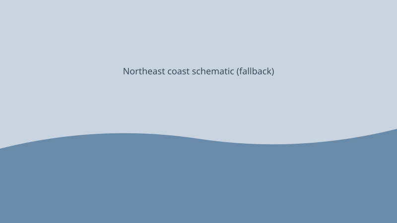

United States · weather · 28 September 2026
A slow-moving nor’easter produced coastal flooding and peak power outages above 100,000 customers from New Jersey to New England.

What is agreed across desks
From Friday into Monday, a slow-moving coastal cyclone described by the National Weather Service as a nor’easter brought high winds, heavy rain, and tidal flooding along the Mid-Atlantic and New England coasts. PowerOutage.us and wire reports tracked a Saturday peak above 100,000 customers without electricity across the region; by early Monday the residual figure had fallen into the tens of thousands. FlightAware recorded more than 400 U.S. flight cancellations on Saturday. The New York City Housing Authority and NYPD confirmed that a fallen tree killed NYCHA employee Leighton Brown, 56, in Brooklyn on Saturday.
States of emergency or local equivalents were in effect in parts of New Jersey and southern New York. Coastal communities from Sea Bright, New Jersey, northward reported repeated inundation at successive high tides. The National Weather Service indicated the system would weaken overnight Sunday into Monday while residual coastal flooding risk remained at subsequent high tides. FEMA described coordination centers as operating at an enhanced posture; that is an operational posture, not a presidential disaster declaration.
What is only a quote
Comparisons to Hurricane Sandy are journalistic colour; the meteorological and damage metrics of 2012 are not identical to this system’s measured rainfall, wind, or insured loss. Statements by governors urging residents to check on neighbours are public-safety messaging, not quantitative damage assessments. Exact final outage peaks and precise high-tide flood extents for Monday remained subject to later utility and municipal tallies.
Mechanism a reader needs
A nor’easter is a mid-latitude cyclone whose centre tracks along or just offshore the U.S. East Coast, producing strong northeasterly winds on the landward side. When the storm moves slowly, successive tidal cycles can stack water against the coast, especially near spring or king tides. Power outages in such events are driven primarily by tree-fall onto distribution lines rather than by direct wind damage to transmission structures. Restoration curves therefore depend on crew numbers, road access, and the density of vegetation near lines.
Coastal flooding under these conditions is a compound of astronomical tide, storm surge, and wave run-up. Low-lying barrier islands and back-bay communities experience the largest relative impacts. The death attributed to a fallen tree is a wind/debris fatality, distinct from drowning fatalities that dominate some tropical-cyclone ledgers. Distinguishing these mechanisms matters for both emergency messaging and later statistical accounting.
What this story is not
It is not a tropical cyclone. It is not a claim of a specific insured-loss total. It is not a political story about disaster declarations. The hero image is a historical type photograph of New Jersey coastal flooding chosen for reuse rights and location relevance; it is not a picture of this weekend’s specific streets.

Source articles and scores
Images: Wikimedia Commons type flooding still via Special:FilePath; local SVG schematic. Captions distinguish type from event. No crossorigin.